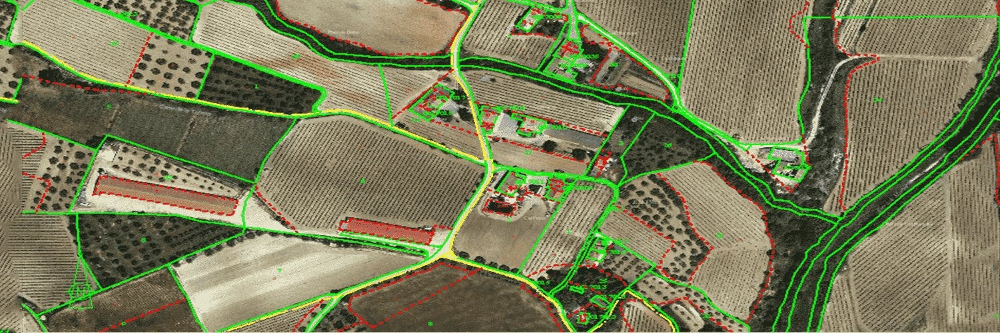

Valoraciones y peritajes
Valoramos fincas rústicas y urbanas para herencias, extinciones de condominio, compraventas o un juzgado. En el informe va el cálculo completo, para que cualquiera pueda seguir de dónde sale el valor.

Para qué se pide una valoración
Herencia y partición
Un valor razonado que todos los herederos puedan revisar y, si hace falta, el reparto en lotes de valor parecido.
Extinción de condominio
El valor de la parte que pasa de un dueño a otro.
Compraventa
Saber si el precio se ajusta al de fincas parecidas de la zona.
Dictamen pericial
Para un juzgado. El perito puede tener que defenderlo en la vista.
Valor a una fecha pasada
Lo que valía la finca en una fecha concreta, por ejemplo la de una herencia.
Inventario de inmuebles
Para ayuntamientos: cada bien con su referencia catastral, su situación registral y su valor.
Cómo valoramos
El suelo y las construcciones se valoran por separado.
- Para el suelo buscamos fincas testigo: fincas identificadas y localizables, parecidas a la suya en comarca, superficie, aprovechamiento y accesos. A cada una le restamos el valor de sus construcciones según su ficha catastral, y el precio del suelo que queda se aplica a la superficie real.
- Las edificaciones, por su coste de reposición, que es lo que costaría hacerlas hoy, descontando lo que han perdido por antigüedad y estado (artículo 18 del Real Decreto 1492/2011).
- En urbana, el método depende del tipo de inmueble y del mercado de la zona.
- Antes de entregar comprobamos que cuadran las superficies y las sumas, que el texto dice lo mismo que las tablas y que cada referencia tiene su ficha.
Si además hay que repartir la finca en lotes, los planos y el GML de cada lote los contamos en segregaciones y particiones.
Qué necesitamos y qué le entregamos
Para empezar
- La referencia catastral de la finca.
- Para qué es la valoración.
- La fecha a la que hay que valorar, si no es la de hoy.
Lo que recibe
- El informe, con el método, las fincas testigo, lo que se ha restado a cada una y el cálculo completo.
- Planos en A3 de situación y emplazamiento, sobre ortofoto y parcelario.
- Fotografías y fichas catastrales.
- Todo en PDF con firma electrónica.
Conviene saber
- El presupuesto no adelanta ningún valor, y el resultado no se pacta con quien encarga la valoración.
- En los dictámenes periciales dejamos claro antes de empezar qué fuentes se pueden usar.
- La tasación para una hipoteca no la hacemos, porque solo pueden hacerla sociedades y servicios de tasación homologados.
Pedir una valoración
Mándenos la referencia catastral y díganos para qué necesita la valoración y a qué fecha. Con eso le pasamos presupuesto y plazo.
- emiliocontadorbrito@gmail.com
- Calle Matilde Tagle Ortiz, 28, 5.º D, 06006 Badajoz